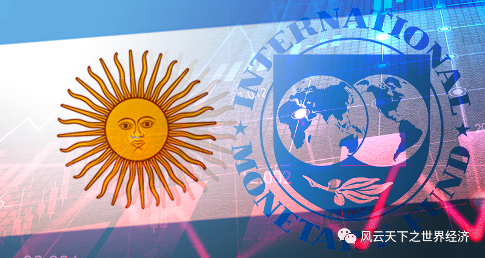

我们用Title/Date/Event/Insight/Voices/Observer来还原此时此刻的世界经济。

印度总理莫迪启动“印度制造”计划
- Title 印度高举保护主义大旗 - Date 2023年8月3日
- Event
最新贸易抑制措施要求印度公司在进口个人电脑或平板电脑之前必须获得许可证。第 23/2023 号通知要求印度外贸总局（DGFT）立即限制进口七种物品，包括笔记本电脑、平板电脑和个人电脑（PC），这些物品属于 HSN 8741 类别。
- Insights
印度有着悠久的保护主义传统。真正的贸易自由化甚至到了1991年才正式开始，而且是在严重的经济危机之下的不得已之举。
这是世界上少数在“许可证管理”上长袖善舞的国家之一。这意味着没有政府的许可，你在这片土地上几乎什么都做不了。虽然纳拉西姆哈-拉奥领导的1991年的自由化改革取消了对所有行业的许可证限制，但是保护主义的基因还是在这个不合时宜的日子被唤醒。久违了的许可证统治"（License Raj）又回来了。
与世界上的大多数的国家不同，此时的印度正享受着难得的“好日子”。根据联合国对全球人口的估计，从今年4月起，印度人口达到了14.3亿，超过中国成为世界上人口最多的国家，而且年轻化的人口结构在银发闪闪的亚洲显得格外扎眼；受益于苹果公司的多元化发展战略，9月12日将要发布的iphone15有相当一部分将从印度泰米尔纳德邦走向世界；俄乌冲突给世界带来了灾难，但是对印度好像并非如此，它仍在大口吮吸着俄罗斯的廉价石油；最近，印度发现了锂储量，众所周知这是一种对制造电池至关重要的金属。在全球经济阴霾重重的背景下，印度的经济增长速度来到了13年来的峰值。
但是，现在已经不是经济岌岌可危的1991年，当前的印度想要的更多。2014 年，印度总理纳伦德拉·莫迪（Narendra Modi）上台执政，发起了 "印度制造 "运动。关税开始上升。如今，关税平均约为18%，远高于印尼和泰国等同等发展水平国家。最近，与其他大型经济体一样，印度也在半导体领域投入了大量资金：中央政府仅在美光（Micron）一家装配厂上的支出就相当于印度整个高等教育年度预算的四分之一。显然，印度还有一个更大的野心，那就是像现在的中国一样成为全球电子供应链中的强国，他们希望到2026 年IT硬件产品年产量达到 3,000 亿美元。
只需要看一组数据便可知晓，此次贸易保护之举有一个不言自明的实施对象——中国。印度的笔记本电脑、平板电脑和个人电脑约占印度年进口总量的 1.5%，其中有大约70-80%来自中国。或许他们希望把迫使富士康在印度建厂的成功案例在惠普、戴尔、宏基和联想的身上再复制一遍。
但是，有两个风险希望印度早就已经意识到。首先，印度也是全球价值链上的一环，信息技术服务是印度最主要的出口部门，而这个部门是计算机产业的下游，需要有强大的算力支持，计算机国内产能显然不能在一夜之间提高到够用的量级，那印度的出口拳头部门显然会因为此次对计算机的进口限制而遭殃，搬起的石头也许会砸到自己的脚；其次，印度是有很多的年轻人，但是年轻并不意味着一切，习惯了种植小麦和敲击键盘的手是否也能熟练地印刷出电路板？
- Voice
印度商务部长皮尤什·戈亚尔（Piyush Goyal）表示，苹果公司已经在印度生产了 5% 到 7% 的产品。他在 1 月份的一次活动上说：“如果我没记错的话，他们的目标是将制造业的比例提高到 25%。”
电子行业机构 MAIT 前总干事阿里·阿赫塔尔·贾弗里（Ali Akhtar Jafri）说：“这不是一种鼓励，而是一种推动。此举的精神是将制造业推向印度。”
艺术家迪亚兹（Diaz）在阿根廷比索钞票上绘制微型艺术品
- Title 成为艺术品的阿根廷比索 - Date 2023年8月14日
- Event
这一天，极右翼自由主义者哈维尔·米莱伊（Javier Milei）国会议员哈维尔·米莱（Javier Milei）在即将10月份揭晓的总统选举中一鸣惊人，他赢得了约 30% 的选票，远远超过了预期。阿根廷央行在8月14日将货币比索贬值近 18%，并将基准利率大幅上调 21 个百分点至 118%。
- Insights
上一次关于阿根廷的好消息应该还是2022年12月18日，在这一天，梅西率领阿根廷队时隔36年第三次捧起了大力神杯。但是，在足球之外，阿根廷最近几年的经济表现的确乏善可陈。
此时的阿根廷正处于十年来第六次经济衰退的边缘。作为拉丁美洲第三大经济体，阿根廷多年来一直深陷经济和金融危机。该国的外汇储备正在迅速缩水，预计今年的通货膨胀率将达到 142.4%。
印制钞票，这是制造通货膨胀最直接也是最有效的方法，历届阿根廷政府无疑深谙此道。
如今阿根廷的通货膨胀严重到什么程度，或许可以去艺术品市场上去寻求答案。艺术家迪亚兹的作品除了充满超现实主义色彩的人像插画和数码雕塑以外，他还擅长在阿根廷比索钞票上描绘演员、电影人物和足球运动员。他这样做是因为这些钱本身基本上一文不值。
塞尔吉奥最初在20比索的纸币上作画，但现在，他在1000比索的纸币上作画。他说："如今，有时我更愿意在阿根廷最大的纸币上作画，我在上面画的画，卖的钱比我用它花的钱多得多"。
除了美味嫩滑的牛肉和耀眼的足球明星，这个国家还盛产贝隆式的政治人物，如今哈维尔·米莱的初选获胜无疑又把这个国家向极右政治又推进了一步。米莱有一个雄心勃勃的经济治理计划，他对腐败政治阶层提出了严厉批评，称该国领导人总是将自己的祖国从一个危机推向另一个危机。他认为平息通货膨胀的唯一出路就是用美元取代比索，如此以来，中央银行也就没有存在的必要了。除此以外，他反对征收新税、取消资本管制、毒品合法化、器官交易自由化、教育系统私有化和无限制移民。
朝着总统王座衔枚疾进的哈维尔·米莱是一个摇滚歌迷，在步入政坛之前，他是一个经济学家。
- Voice
——阿根廷经济咨询公司 Analytica 总监里卡多·德尔加多说：“我们现在面临的情况比我们预期的要不确定得多。”
——摩根大通（JPMorgan）投资银行分析师迭戈·佩雷拉（Diego Pereira）在一份报告中预计，“汇率压力将不断增加，导致平行汇率与官方汇率之间的差距不断扩大”。官方汇率为 1 美元兑 287 比索，而自由浮动的黑市汇率是这一数字的两倍多。佩雷拉建议投资者对阿根廷政府债券保持“市场权重”，因为现有的金融形势“将进一步恶化”。

阿根廷和它最大的债权人——货币基金组织
- Title 阿根廷，值得在8月份里被提及两次 - Date 2023年8月23日
- Event
国际货币基金组织（IMF）执行董事会完成了对阿根廷扩大基金机制（EFF）延长安排的第五次和第六次审查。执董会的决定允许立即支付约 75 亿美元（55 亿特别提款权），使该安排下的支付总额达到约 360 亿美元。
- Insights
正如个人或公司可以通过贷款来融资，国家政府也经常借钱来度过难关或者促进国家的发展或福祉。对于拥有成熟资本市场的国家来说，发行政府债券是最具效率的一个手段。但是这个手段显然不适合阿根廷。它是一个罕见的以国际货币基金组织为最大债权国的国家，欠IMF的债务存量高达400亿美元，约占阿根廷外债的三分之一。
向濒临破产的国家施以援手，这是IMF最重要的使命之一。“优先债权人”的身份安排意味着他们的债务会被优先偿还，而且在债务重组中不承担损失部分，当然，这一优先权安排也让IMF能够比其他机构提供更便宜的一揽子救援计划。自从1958年12月2日从基金组织获得第一笔贷款以来，在过去的 65 年中，阿根廷频繁使用国际货币基金组织的资源，数次将IMF的借款模式推向了极致。2018 年近 570 亿美元的放款额度至今依然保持着该组织发放贷款最多的记录。
IMF的贷款尽管便宜，但是往往附有一系列能够体现该组织宗旨的政府改革条款。阿根廷在使用资金上从不客气，但是对基金提供的系列改革方案则兴趣不大，2018 年协议中规定的改革措施几乎都没有实施。
面对这么一个屡屡挑战底线的债务人，基金组织的耐心似乎还有足够的储备。最近阿根廷的手头的确比较紧，除了IMF这个稳定的提款机，在过去的三个月里，阿根廷从中国借了 17 亿美元的短期债务，从地区贷款机构CAF借了 13 亿美元，从卡塔尔借了 7.75 亿美元。
不要忘了，还有一个月阿根廷大选结果就会出炉，给一个即将卸任的政府一大笔钱，难道希望下一届政府会照单全收？
但是，不管如何，通过这个75亿美元的借贷支持，国际货币基金组织推迟了灾难的发生的，也让这个日益荒诞的局面得以延续。
- Voice
——IMF执行局常务董事兼主席 Kristalina Georgieva 女士说：“自第四次审查完成以来，由于历史性干旱和政策滑坡，经济形势日益严峻，导致主要计划目标未能实现到 6 月底。在高通胀和国际收支压力的背景下，政府当局正在实施一项新的一揽子政策，以重建储备金和加强财政秩序为中心，保障稳定并巩固中期可持续性。”
——卡内基梅隆大学的艾伦·梅尔策（Allan Meltzer）评论道，国际货币基金组织的救助所引发的道德风险是罪魁祸首，任何解决方案都需要削减国际货币基金组织的活动，如果不是彻底关闭的话。
美国钢铁公司大厦依然是匹兹堡市最高建筑，可惜最大的租户不再是USS，而是匹兹堡大学医疗中心UPMC
- Title 美国钢铁公司成为被竞购对象 - Date 2023年8月17日
- Event
美国钢铁公司在8月13拒绝了竞争对手克利夫兰-克里夫斯公司（Cleveland-Cliffs）提出的 73 亿美元收购要约，14日，工业集团 Esmark出价 78 亿美元收购这家匹兹堡钢铁制造商。当天，美国钢铁公司的股价飙升了 30% 以上，对这家拥有 122 年历史的钢铁生产商的出价很有可能会更高。
- Insights
1901年由J.P. 摩根、安德鲁·卡内基等人创建的美国钢铁公司（United States Steel Corp.）一直是美国工业化的象征。122年以来，它的产品帮助建造了从纽约联合国大厦到新奥尔良超级穹顶等各种建筑。在日本和中国在过去 40 年间先后成为钢铁制造的领跑者之前，美国的钢铁行业一直在全球占据主导地位。
如此“百年老店”意味美国钢铁公司熬过命运中的许多艰难时刻。大萧条、二战、石油危机和美苏太空争霸，但是这一次，他很可能逃不过被收购的结局。
钢铁业是美国“再工业化”的核心，中美贸易的战火最早就是从来自中国的廉价钢铁烧起来的。2018 年，特朗普政府对进口钢铁征收 25% 的关税，这本应为该公司和美国其他钢铁企业带来帮助。
但是这只是一个美好的愿望而已。
工业对钢铁的需求量巨大，由于客户担心关税会影响供应，因此采取过度的囤货策略，以应对迟迟没有出现的短缺。由于库存积压，再加上下游的汽车、能源和建筑行业增长放缓，价格回落。需求的下降叠加了美国产量的增加，造成了供应过剩和价格暴跌，反而使钢铁行业在此后的几年里备受煎熬。
2020年新冠疫情导致的供应链错乱开始推动钢铁价格上涨，到2021 年夏天已接近每吨 2000 美元，虽然目前价格已回落到每吨 800 美元左右，但仍处于一个较高的水平。
五年来过山车式的钢铁价格让行业内的竞争格局经历了大洗牌，可惜这次要被吃掉的却是曾经的那张“大王”。当然，在目前的行情下，应该会卖上一个不错的价钱。
- Voice
——竞购者之一克利夫兰·克里夫斯公司的首席执行官路伦科·贡萨尔维斯（Lourenco Goncalves）说，两家美国钢铁制造商的合作将“为我们的客户创造成本更低、更具创新性和更强大的国内供应商”。
——在8月29日致股东的一封信中，美国钢铁公司表示已与"众多"第三方签订了保密协议，并开始与潜在买家分享尽职调查信息。公司在信中写道："我们的首要义务是坚持我们的信托责任。这意味着，我们将专注于公司的发展道路，为你们——我们的股东——创造最大价值"。

更多精彩 扫我关注